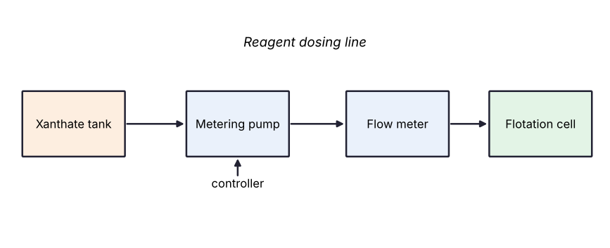

SYNTHETIC SAMPLE DOCUMENT generated for software testing. It is not a real bulletin.
The reagent dosing system supplies xanthate from the xanthate tank to the roughing cell through a metering pump and a flow meter. The controller adjusts the pump speed to keep the reagent dosage stable.

| Fault | Cause | Action |
|---|---|---|
| Dosage too low | Metering pump wear | Replace the pump diaphragm |
| Dosage unstable | Air in the dosing line | Bleed the dosing line |
| Flow meter reading drifts | Scaling on the sensor | Clean the flow meter |
A low reagent dosage reduces the recovery rate, and an excess reagent dosage makes the froth viscous and lowers concentrate grade.